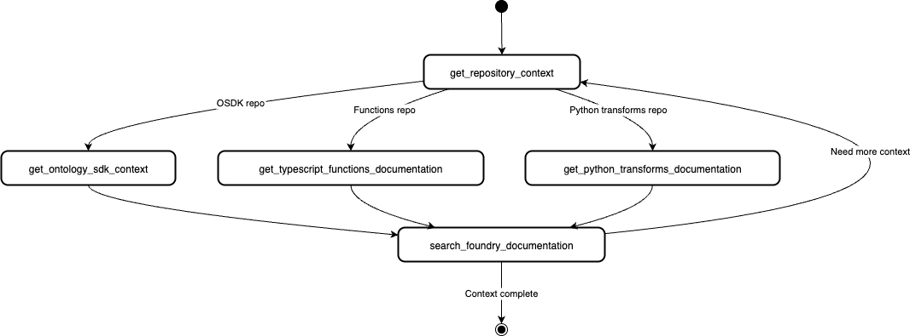
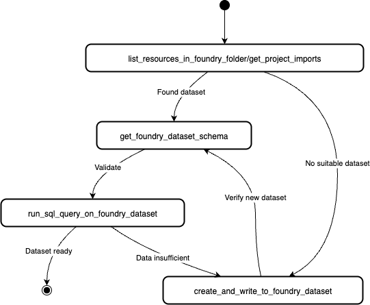
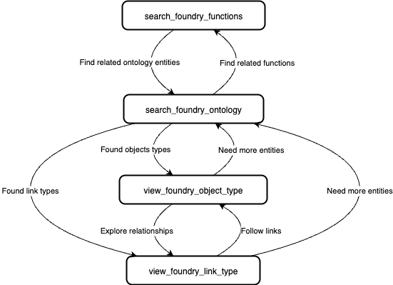
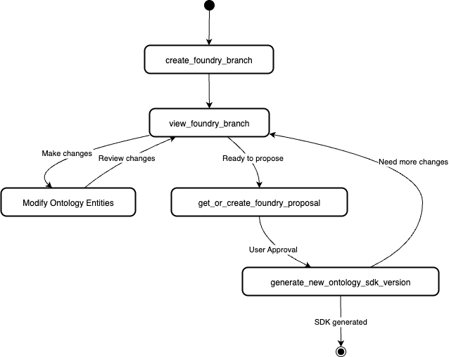
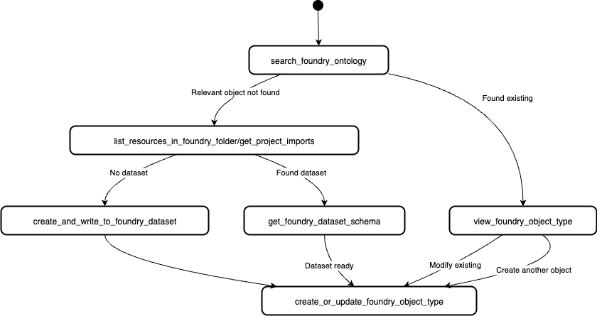
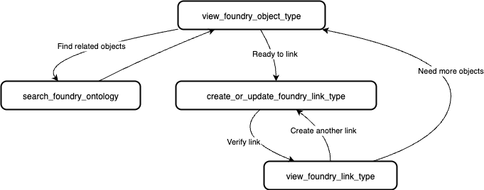

This page contains examples of MCP workflows, which are a linked series of actions used by an AI agent to achieve a goal. MCP workflows can involve tool use as well as connection to resources like repositories.
The Palantir MCP is able to provide ontology and code-snippet context to your agent loop. After the context is provided, the agent will be able to perform the following:
Example queries:
The Palantir MCP currently provides context for React OSDK, Python transform, and Typescript function repositories.

The Palantir MCP is able to view list datasets, run SQL queries on them, and create datasets with notional data.
:::callout{theme="neutral"} Note that the Palantir MCP is not allowed to overwrite existing datasets, but can only create new ones. This provides a safeguard for your existing data. :::
Example queries:
ri.foundry.main.dataset.033384ec-73de-41c1-bebe-45178cfc468b"
The Palantir MCP has tools for searching the ontology. The tools allow agents to search through object types, action types, and functions in your ontology.
Example queries:

The Palantir MCP can create proposals, modify the ontology, and regenerate your Developer Console OSDK for immediate use in code.
:::callout{theme="neutral"} Note that all modifications to the ontology must go through the proposal review process. This means that human review and approval is required before the MCP makes any lasting changes to the ontology. :::
This flow is initiated by ontology-related queries, such as the following:


